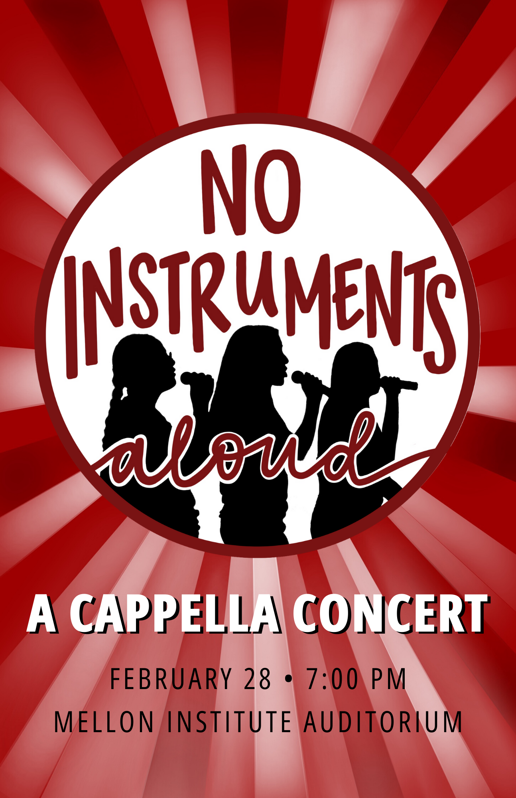
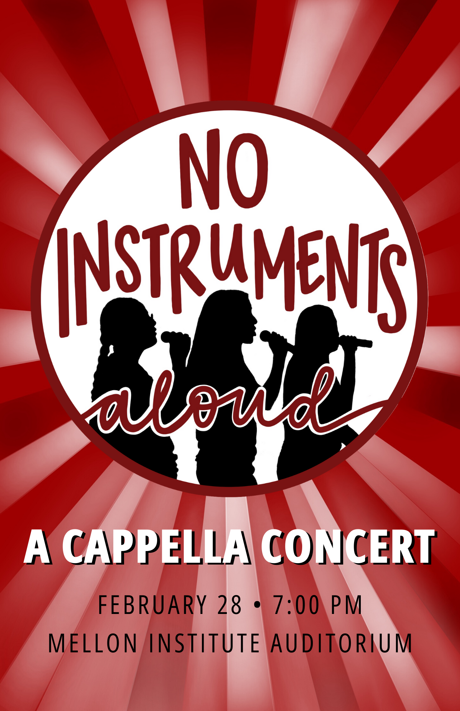
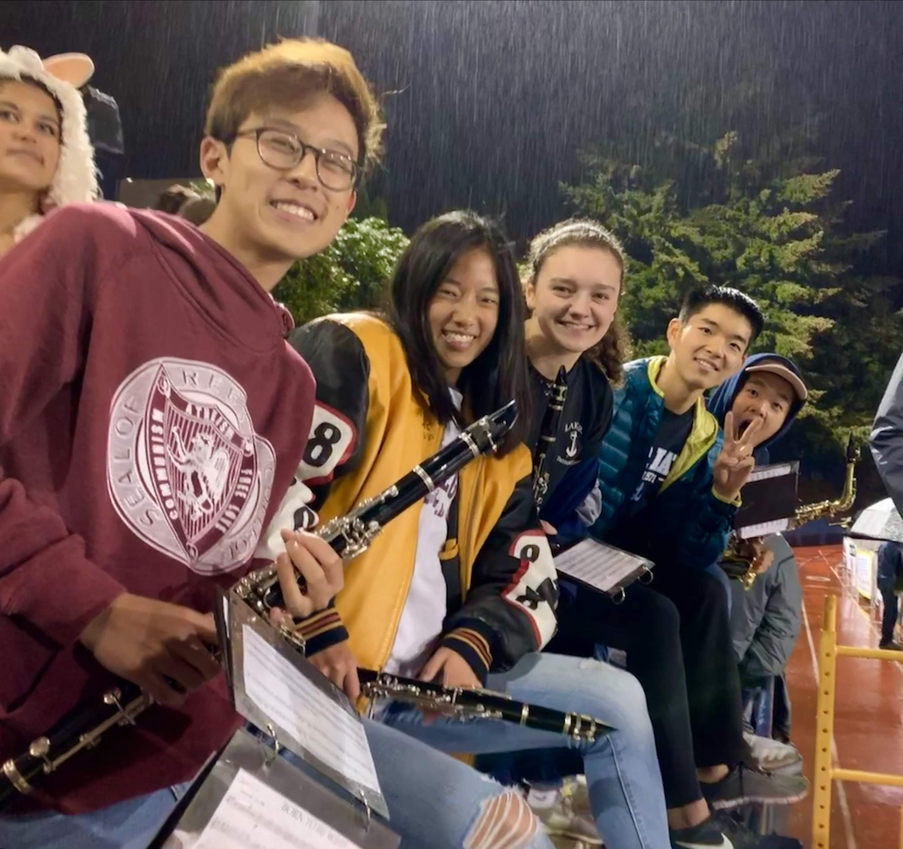
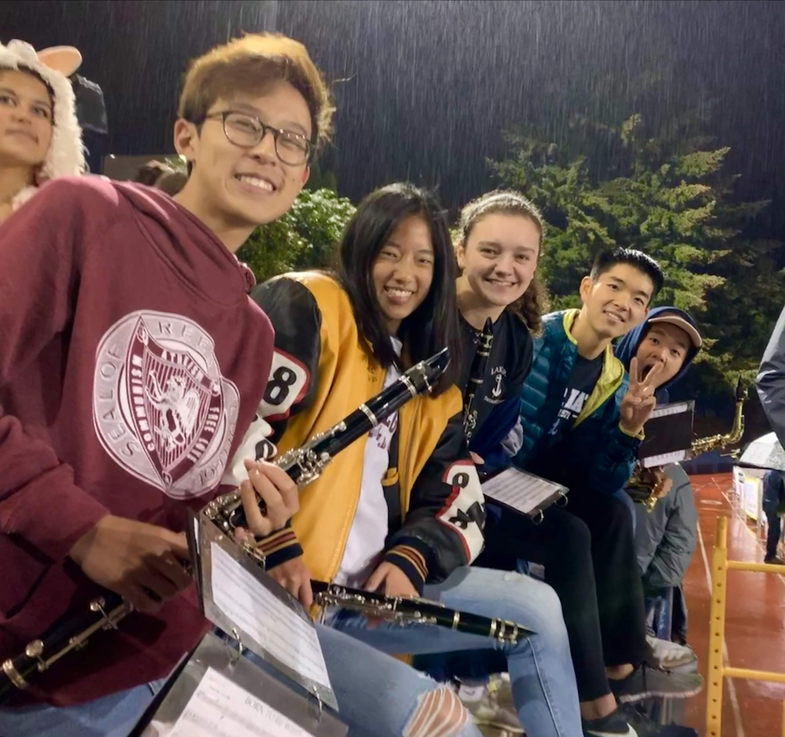

Hello World! :)
I'm a second-year PhD student in Computer Science at Cornell, where I'm very lucky to work with Profs.
Emma Pierson
and
Nikhil Garg.
My interests lie broadly in the area of developing algorithms and machine learning methods to understand and address societal issues -- some topics I care about include systemic inequities, market inefficiencies, and group dynamics. I'm supported by an NSF Graduate Research Fellowship.
In 2023, I graduated from Carnegie Mellon University with a B.S. in Computer Science and a concentration in Human-Computer Interaction. I was fortunate to work with Profs.
Justine Sherry
and
Weina Wang
on establishing worst-case bounds for adversarial attacks against networked systems, based on the packet scheduling algorithm and job size estimation heuristics used. I also spent a few semesters exploring other questions: characterizing how people make sense of bias in machine learning models and analyzing linguistic patterns in social media manipulation.
 

 
